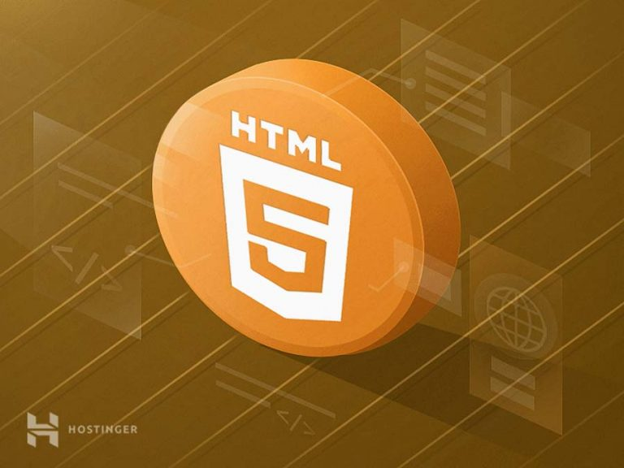

Pengertian HTML dan Sejarahnya

Hypertext Markup Language atau HTML adalah bahasa markup standar yang digunakan untuk membuat halaman website dan aplikasi web.
Sejarah HTML dimulai oleh Tim Berners-Lee, seorang ahli fisika di lembaga penelitian CERN yang berlokasi di Swiss.
Versi pertamanya dirilis pada tahun 1991, dengan 18 tag. Sejak saat itu, setiap kali ada versi barunya, pasti akan selalu ada tag dan attribute (tag modifier) yang juga baru.
Ketika bekerja dengan bahasa markup ini , Anda menggunakan struktur kode sederhana (tag dan attribute) untuk mark up halaman website. Misalnya, Anda membuat sebuah paragraf dengan menempatkan enclosed text di antara tag pembuka <p> dan tag penutup </p>.
Berkat popularitasnya yang terus meningkat, bahasa markup ini kini dianggap sebagai standar web resmi. Spesifikasi HTML dikelola dan dikembangkan oleh World Wide Web Consortium (W3C). Berdasarkan HTML Element Reference milik Mozilla Developer Network, saat ini ada 140 tag HTML, meskipun sebagiannya sudah tidak lagi didukung oleh beberapa versi terbaru browser.
Kemudian, pada tahun 2014, HTML5 mulai diperkenalkan. Dengan diperkenalkannya HTML5, terdapat semantic baru seperti <article>, <header>, dan <footer> yang memperjelas bagian-bagian dalam konten. Nah, setelah Anda tahu apa itu HTML, selanjutnya kami akan membahas cara kerjanya.
Cara Kerja HTML
File HTML diakhiri dengan ekstensi .html atau .htm. Ekstensi file ini bisa dilihat dengan mengunakan web browser apa pun (seperti Google Chrome, Safari, atau Mozila Firefox). Browser tersebut membaca file HTML dan merender kontennya sehingga user internet bisa melihat dan membacanya.
Biasanya, rata-rata situs web menyertakan sejumlah halaman HTML yang berbeda-beda. Contohnya, halaman beranda, ‘Tentang Kami’, halaman kontak memiliki dokumennya sendiri-sendiri.
Masing-masing halaman tersebut terdiri atas serangkaian tags (bisa disebut juga elements), yang tersusun untuk membentuk sebuah halaman website. Tag tersebut membuat hierarki yang menyusun konten hingga menjadi bagian, paragraf, heading, dan block konten lainnya.
Sebagian besar elemen bahasa markup ini memiliki tag pembuka dan penutup yang menggunakan syntax <tag> </tag>.
Berikut contoh kode dari susunan atau struktur HTML:
- Elemen teratas dan terbawah adalah division sederhana (<div></div>) yang bisa Anda gunakan untuk mark up bagian konten yang lebih besar.
- Susunan di atas terdiri atas heading (<h1></h1>), subheading (<h2></h2>), dua paragraf (<p></p>), dan satu gambar (<img>).
- Paragraf kedua meliputi sebuah link (<a></a>) dengan attribute href yang terdiri atas URL tujuan.
- Tag gambar memiliki dua attribute,src untuk path gambar dan alt untuk deskripsi gambar.
Pengertian Tag HTML dan Fungsinya
Tag HTML memiliki dua tipe utama: block-level dan inline tags.
- Elemen block-level memakai semua ruang yang tersedia dan selalu membuat line baru di dalam dokumen. Contoh dari tag block adalah heading dan paragraf.
- Elemen inline hanya memakai space sesuai dengan kebutuhannya dan tidak membuat line baru di halaman. Biasanya elemen ini akan memformat isi konten dari elemen block-level. Contoh dari tag inline adalah link dan emphasized strings.
Tag Block-Level
Tiga tag block-level yang harus dimiliki oleh setiap dokumen HTML adalah <html>, <head>, dan <body>.
- Tag <html></html> adalah elemen level tertinggi yang menyertakan setiap halaman HTML.
- Tag <head></head> menyimpan informasi meta, seperti judul dan charset halaman.
- Tag <body></body> melampirkan semua konten yang muncul pada suatu halaman.
Tag Inline
Sebagian besar tag inline digunakan untuk memformat teks. Sebagai contoh, tag <strong></strong> akan render elemen ke format bold, sedangkan tag <em> </em> akan ditampilkan dalam format italic. Hyperlink adalah elemen inline yang mewajibkan adanya tag <a></a> dan attribute href untuk mengindikasi tujuan link: <a href="https://example.com/">Click me!</a> Gambar (image) juga merupakan elemen inline. Anda dapat menambahkan satu gambar dengan menggunakan <img> tanpa harus membubuhkan tag penutup. Hanya saja, Anda disarankan menggunakan attribute src untuk menentukan path gambar, misalnya: <img src="/images/example.jpg" alt="Example image">.
Apa yang Membedakan HTML dengan HTML5?
Sejak pertama diperkenalkan, bahasa ini telah melewati perkembangan yang cukup signifikan. W3C terus merilis versi dan update terbaru sembari mencetak sejarah dan mengukuhkan keberadaannya.
HTML4 (dikenal sebagai “HTML”) dirilis pada tahun 1999 dan versi terbarunya diperkenalkan pada publik pada tahun 2014, yaitu HTML5, versi terbaru ini menambahkan lebih banyak fitur baru ke bahasa mark up ini.
Salah satu fitur canggih di HTML5 adalah dukungan untuk embed audio dan video. Jadi, alih-alih menggunakan Flash player, kita bisa menyematkan file video dan audio ke halaman website dengan memanfaatkan tag <audio></audio> dan <video></video>. Fitur tersebut juga memiliki dukungan bawaan untuk SVG dan MathML untuk rumus matematika dan ilmiah.
HTML5 juga memperkenalkan beberapa perbaikan pada semantic. Tag semantic baru mengirimkan informasi pada browser tentang arti konten, yang tak hanya bermanfaat bagi pembaca, tapi juga mesin pencari.
Tag semantic yang paling banyak digunakan adalah <article></article>, <section></section>, <aside></aside>, <header></header>, dan <footer></footer>.
Kelebihan dan Kekurangan HTML
Sama seperti hal teknis lainnya dalam dunia web, bahasa markup ini juga punya kelebihan dan kekurangannya. Berikut kelebihan HTML:
-
Digunakan secara luas dan memiliki banyak sumber serta komunitas
yang besar. - Dijalankan secara alami di setiap web browser.
- Mudah dipelajari.
- Open-source dan sepenuhnya gratis.
- Rapi dan konsisten.
- Menjadi standar resmi web, dikelola oleh (W3C).
- Integrasi mudah dengan bahasa backend, seperti PHP dan Node.js.
Kemudian, berikut adalah kekurangan HTML:
- Umumnya digunakan untuk halaman web statis. Untuk fitur dinamis, Anda bisa menggunakan JavaScript atau bahasa backend, seperti PHP.
- Tidak bisa menjalankan logic. Alhasil, semua halaman web harus dibuat terpisah meskipun menggunakan elemen yang sama, seperti header dan footer.
- Fitur baru tidak bisa digunakan dengan cepat di sebagian browser.
- Perilaku browser terkadang sulit diprediksi. Misalnya, browser lama tidak selalu bisa merender tag yang lebih baru.
Hubungan HTML, CSS, dan JavaScript
Meskipun dinyatakan sebagai bahasa markup yang canggih dan mudah, HTML tidak sepenuhnya bisa membuat website yang profesional dan responsif. Bahasa ini hanya bisa digunakan untuk menambah elemen dan membuat struktur konten. Namun di satu sisi, bahasa ini bisa bekerja secara maksimal dengan dua bahasa frontend: CSS (Cascading Style Sheets) dan JavaScript. Jika digabungkan, kedua bahasa frontend ini bisa meningkatkan pengalaman user dan memberikan fungsi yang lebih canggih.
- CSS erat kaitannya dengan styling, seperti background, warna, layout, spacing, dan animiasi.
- JavaScript memungkinkan Anda menambahkan fungsionalitas yang dinamis, seperti slider, pop-up, dan galeri foto.
Jika digambarkan, berikut perbedaan HTML dan CSS dan JavaScript: HTML adalah orang yang tidak mengenakan busana apa pun, kemudian CSS adalah bajunya, kemudian JavaScript adalah aktivitas dan sikap orang tersebut.
KESIMPULAN
Sampai di sini, Anda sudah mempelajari apa itu HTML, pengertiannya, dan cara kerjanya. HTML bukanlah bahasa pemrograman, dan tidak memiliki kemampuan untuk membuat fungsionalitas yang dinamis. Dengan bahasa markup ini, user bisa mengelola dan memformat dokumen secara statis, sama seperti Microsoft Word. Berdasarkan cara kerja HTML, Anda bisa menggunakannya untuk membuat struktur konten pada website dan aplikasi web (menggunakan coding sederhana). HTML merupakan level terbawah dari teknologi frontend dan berfungsi sebagai dasar styling yang bisa Anda tambahkan dengan CSS dan fungsionalitas yang dapat dijalakan menggunakan JavaScript.